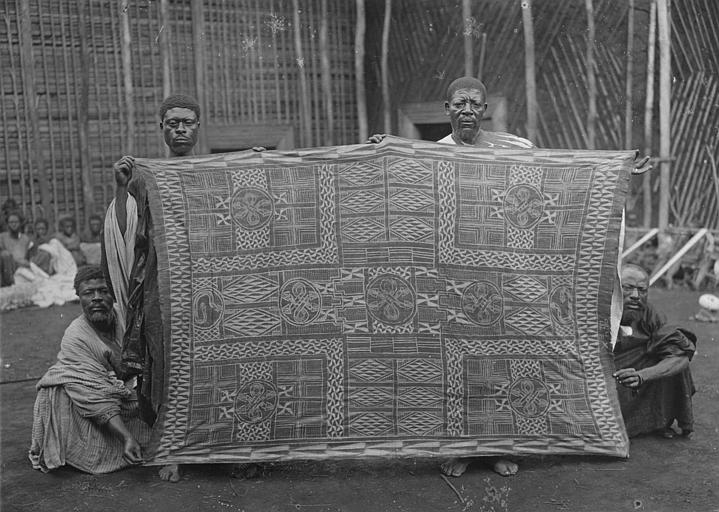
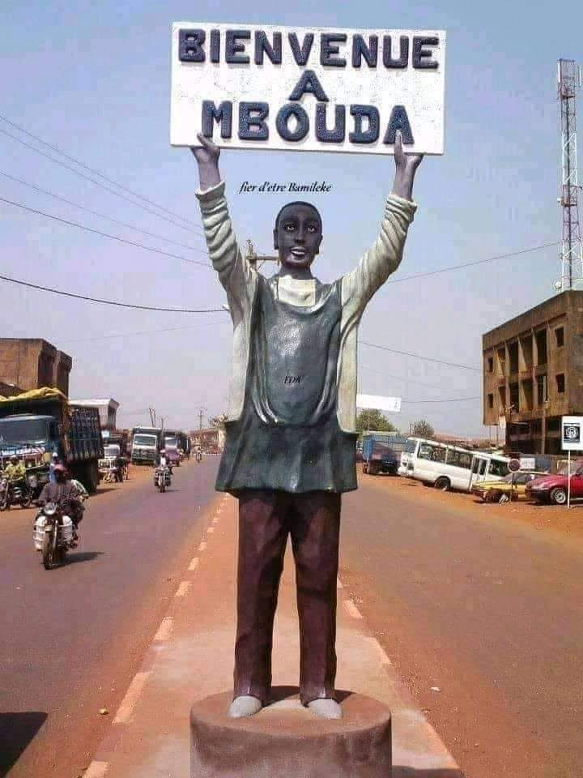
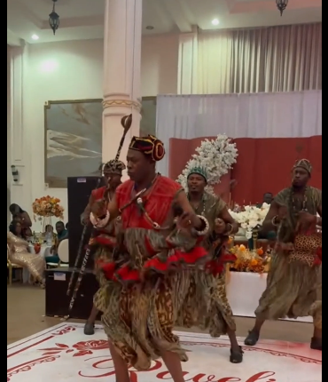

Artisanat
Le geste séculaire du tisserand.
Tissage du ndop bleu indigo, vannerie, sculpture sur bois, perlage des trônes royaux : l'artisanat Bamboutos est une écriture des mains.
Explorer →située au coeur des bamboutos, mbouda est un un village riche en histoire, en coutumes et en savoir-faire ancstraux. ses chefferies traditionnelles, ses danses rituelles, ses masques ceremoniels et son artisanat temoignent d'un patrimoine culturel préservé depuis des generations.
ville de rencontre et de transmission, mbouda fait vivre l'heritage bamiléké a travers ses fetes, sa gastronomie et ses expressions artistiques. entre montagnes verdoyantes et traditions vivantes, elle incarne l'identité culturelle de l'ouest du cameroun.
Au 17ᵉ siècle, ls NDA'A auraient quitter les rives du nil et seraient descendu jusqu'au lac tchad , puis progréssés dans la plaine tikar ou ils furent poursuivis par les guerriers musulmans.
Lire l'histoire complète →.jpg)



Tissage du ndop bleu indigo, vannerie, sculpture sur bois, perlage des trônes royaux : l'artisanat Bamboutos est une écriture des mains.
Explorer →Mekum, Mendzon, Nzap-Mekum, Lali : chaque danse est une prière, chaque masque un ancêtre rappelé parmi les vivants.
Explorer →Nkui, taro-sauce jaune, koki, kondrè : la cuisine mbouda célèbre la terre généreuse des bamboutos.
Explorer →